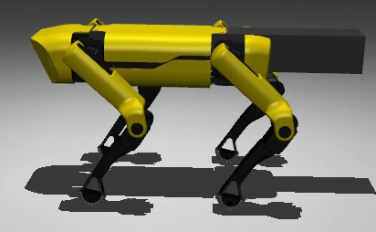

Make a quadruped turn toward goals—not merely trot
A MuJoCo SpotMicro agent learns to navigate toward coordinates and track CSV-defined waypoints. Instead of controlling every joint directly, PPO outputs three high-level adjustments to an existing trot controller.
A learned brain and a deterministic gait
The policy observes robot orientation, motion, joint states, and goal-relative information. It outputs gait frequency scaling, stride amplitude scaling, and turning bias, which are converted by a deterministic gait generator into joint position targets.
Goal-relative observations, heading error, body velocity, and stability signals.
Goal progress, heading alignment, stability, energy regularization, and a goal-reached bonus.
Load structured coordinates from CSV and evaluate turning and waypoint completion in simulation.
SpotMicro in the project simulation


This is a simulation-based waypoint-tracking project. Its public repository lists real-hardware transfer as future work, not an accomplished result.